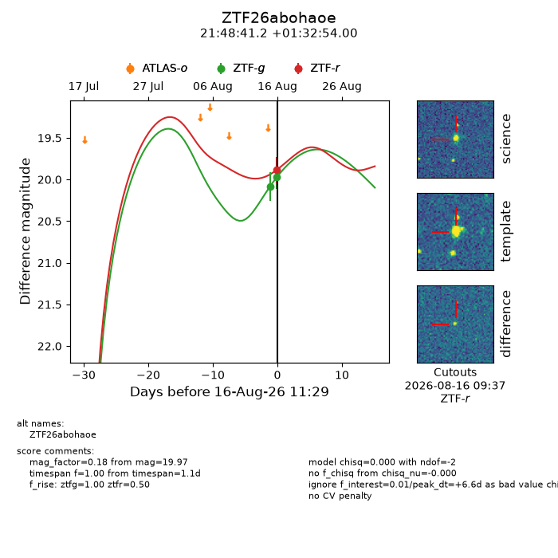
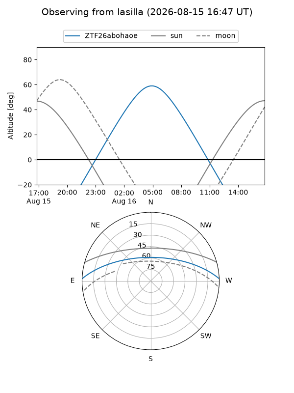
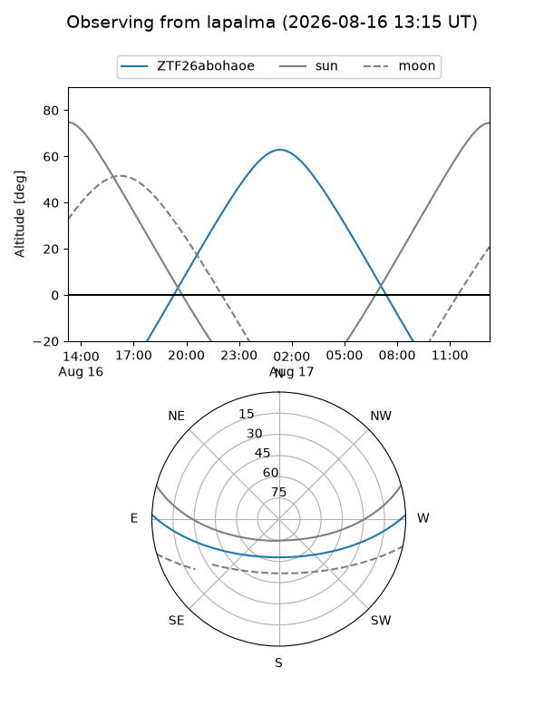
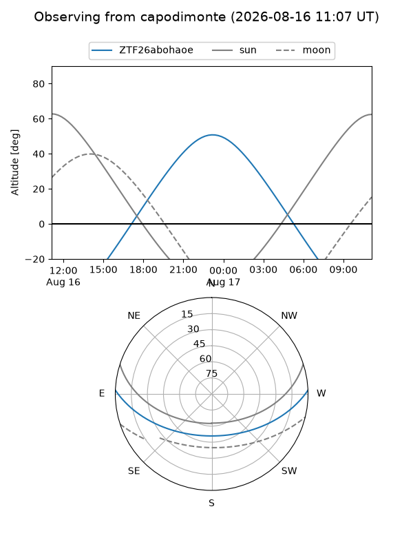
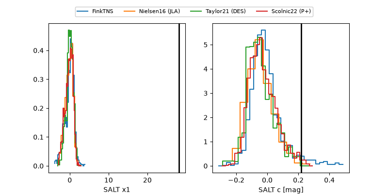

ZTF26abohaoe
Target ZTF26abohaoe at 2026-08-16 11:33
Aliases and brokers:
FINK-ZTF: ztf.fink-portal.org/ZTF26abohaoe
Lasair-ZTF: lasair-ztf.lsst.ac.uk/objects/ZTF26abohaoe
ALeRCE-ZTF: alerce.online/object/ZTF26abohaoe
Direct TNS query: direct search
alt names
ZTF26abohaoe (ztf,fink_ztf)
Coordinates:
equatorial (ra, dec) = 327.1716,+1.54833
equatorial (HMS+DMS) = 21:48:41.18,+01:32:54.00
galactic (l, b) = (58.5163,-37.52936)
Flags:
peak dt: +6.6
Photometry:
last ztfg=19.97, ztfr=19.89
2 ztfg, 1 ztfr detections
Lightcurve

Visibility



Additional plots
